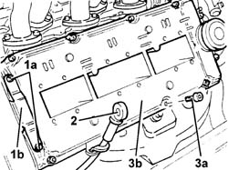

1016A30 Left TAPPET COVER - R.R. and Replace gasket
- Path
- Procedures > 10 ENGINE > 1016 CYLINDER HEAD(S) > 1016A TAPPET COVERS > 1016A30 Left TAPPET COVER - R.R. and Replace gasket
- Kind
- repair procedure (removal / refitting; the operation number is the code)
- Applies to
- engines: 2.0 TB, 2.4 20V, 3.0 V6, 3.2 V6; all production periods
- Interactive page
- https://sloeber94.github.io/elrnDB-lThss/en/#/184641
Applies to: engines: 3.0 V6, 3.2 V6; all production periods
 Removing
Removing
 Refitting
Refitting- Position the vehicle on a lift.
- Open the boot, remove the cover on the left hand side and disconnect the negative battery lead.
See in Op. 7040D50 ENGINE COMPARTMENT UPPER SOUND INSULATION SHIELD - R.R.
See in Op. 1016A42 LEFT CYLINDER HEAD IGNITION COIL COVER - R.R.
See in Op. 5510C16 Left cylinder head IGNITION COILS - R.R.
See in Op. 4450B04 Right FRONT WHEEL (one) - R.R.
- Raise the vehicle on the lift.
See in Op. 7055B54 PROTECTION/GUARD under engine - R.R.
See in Op. 7055B64 Engine compartment DUST SEAL in front wheel arch (one), left or right - R.R.
See in Op. 7055B42 FRONT WHEEL ARCH LINER (one), left or right - R.R.
See in Op. 1092G10 Engine components single drive BELT - R.R.
- Lower the lift.
See in Op. 1088B10 Engine coolant SUPPLY RESERVOIR - R.R.
See in Op. 1048A21 AIR INLET HOSE FROM INTAKE TO FILTER - R.R.
See in Op. 1048A28 vacuum air circuit resonator pipe - r+r
See in Op. 1008C10 Power unit REACTION ROD - Replace
See in Op. 1016A42 LEFT CYLINDER HEAD IGNITION COIL COVER - R.R.
See in Op. 1048A11 COMPLETE AIR FILTER -R.R.
See in Op. 1032D12 Timing system protective COVER(S) - R.R.
- Disconnect the earth lead from the tappet cover, left side.
1. Undo the bolts (1a) and remove the bracket (1b) securing the protective timing cover.
2. Release the engine oil dipstick undoing the bolt fixing the bracket to the cover.
3. Undo the bolts (3a) and remove the left side tappet cover (3b) complete with gasket.

Applies to: engines: 3.0 V6, 3.2 V6; all production periods
Refitting
Removing- Place the engine oil dipstick back in its housing and secure the mounting bracket using the cover bolts
- Fit the left side tappet cover, complete with a new gasket, and secure it tightening the bolts to the recommended torque.
 | Value - daNm | Fastening | Component | Ø |
|---|---|---|---|---|
. | 1.3 | Bolt | TAPPET COVERS | M7 |
- Fit the protective timing cover mounting bracket and secure it using the bolts.
- Connect the earth lead to the tappet cover, left side.
See in Op. 1032D12 Timing system protective COVER(S) - R.R.
See in Op. 1048A11 COMPLETE AIR FILTER -R.R.
See in Op. 1016A42 LEFT CYLINDER HEAD IGNITION COIL COVER - R.R.
See in Op. 1008C10 Power unit REACTION ROD - Replace
See in Op. 1048A28 vacuum air circuit resonator pipe - r+r
See in Op. 1048A21 AIR INLET HOSE FROM INTAKE TO FILTER - R.R.
See in Op. 1088B10 Engine coolant SUPPLY RESERVOIR - R.R.
- Raise the vehicle.
See in Op. 1092G10 Engine components single drive BELT - R.R.
See in Op. 7040D50 ENGINE COMPARTMENT UPPER SOUND INSULATION SHIELD - R.R.
See in Op. 7055B64 Engine compartment DUST SEAL in front wheel arch (one), left or right - R.R.
See in Op. 4450B04 Right FRONT WHEEL (one) - R.R.
- Raise the vehicle on the lift.
- Connect the negative battery lead, then close the boot.
- Remove the vehicle from the lift.
- [0010T21]
Applies to: engines: 2.0 TB, 2.4 20V; all production periods
- Operation not available
Topics linked from this page (14)
- 1008C10 Power unit REACTION ROD - Replace
- 1016A42 LEFT CYLINDER HEAD IGNITION COIL COVER - R.R.
- 1032D12 Timing system protective COVER(S) - R.R.
- 1048A11 COMPLETE AIR FILTER -R.R.
- 1048A21 AIR INLET HOSE FROM INTAKE TO FILTER - R.R.
- 1048A28 vacuum air circuit resonator pipe - r+r
- 1088B10 Engine coolant SUPPLY RESERVOIR - R.R.
- 1092G10 Engine components single drive BELT - R.R.
- 4450B04 Right FRONT WHEEL (one) - R.R.
- 5510C16 Left cylinder head IGNITION COILS - R.R.
- 7040D50 ENGINE COMPARTMENT UPPER SOUND INSULATION SHIELD - R.R.
- 7055B42 FRONT WHEEL ARCH LINER (one), left or right - R.R.
- 7055B54 PROTECTION/GUARD under engine - R.R.
- 7055B64 Engine compartment DUST SEAL in front wheel arch (one), left or right - R.R.